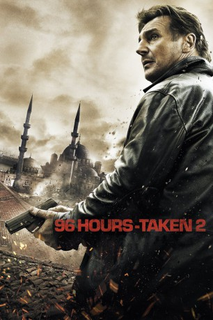

#187 96 Hours - Taken 2
 gesehen am 25.04.2016
gesehen am 25.04.2016
 
 IMDB-Wertung: 6.3 / 10
IMDB-Wertung: 6.3 / 10  Metascore: 45
Metascore: 45 
Nachdem der frühere CIA-Topagent Bryan Mills im ersten Teil seine Tochter Kim in Eigenregie aus den Klauen eines osteuropäischen Mädchenhändlerrings befreit hatte, braucht er diesmal selber Hilfe. Einem Vater der damaligen Kidnapper gefiel Mills Aufräumaktion so gar nicht, weshalb er den mit seiner Frau Leonore im Urlaub in Istanbul weilenden Ex-Agenten kurzerhand als Geisel nimmt. Mit Hilfe seiner Tochter gelingt es Mills, den Spieß umzudrehen und seine Familie in Sicherheit zu bringen. Auch dieses Mal springt der ehemalige Topagent dabei nicht gerade zimperlich mit seinen Widersachern um.
Jahr: 2012
Dauer: 92 Minuten
FSK: 16
Land: Frankreich Studio: UFATonspuren:
Untertitel:
Auflösung: 1080p (1920×808) Größe: 7208 MB
Genre: Action, Krimi, Thriller
Regisseur: Olivier Megaton
Drehbuch: Luc Besson, Robert Mark Kamen, Luc Besson, Robert Mark Kamen
Soundtrack: Nathaniel Méchaly
Darsteller:
 Liam Neeson als Bryan Mills
Liam Neeson als Bryan Mills Maggie Grace als Kim
Maggie Grace als Kim Famke Janssen als Lenore
Famke Janssen als Lenore Leland Orser als Sam
Leland Orser als Sam Jon Gries als Casey
Jon Gries als Casey D.B. Sweeney als Bernie
D.B. Sweeney als Bernie Luke Grimes als Jamie
Luke Grimes als Jamie Rade Serbedzija als Murad Krasniqi
Rade Serbedzija als Murad Krasniqi Kevork Malikyan als Inspector Durmaz
Kevork Malikyan als Inspector Durmaz- Frank Alvarez als Car Wash Attendant
- Cengiz Bozkurt als Border Guard #1
- Aclan Bates als Cheikh's Aide
 Olivier Rabourdin als Jean-Claude
Olivier Rabourdin als Jean-Claude Luenell als Driving Instructor
Luenell als Driving Instructor Nathan Rippy als Newsreader
Nathan Rippy als Newsreader Alain Figlarz als Suko
Alain Figlarz als Suko- Murat Tuncelli als Custom Officer Albania
- Ali Yildirim als Imam
- Ergun Kuyucu als Mirko
- Hakan Karahan als Reception Clerk
- Saruhan Sari als Waiter
- Naci Adigüzel als Cheikh
- Mehmet Polat als Hotel Driver
- Yilmaz Kovan als Hotel Thug #1
- Erdogan Yavuz als Hotel Thug #2
- Luran Ahmeti als Hotel Thug #3
- Cengiz Daner als Hotel Duty Officer
- Melis Erman als Maid Lockers
- Erkan Üçüncü als Barber
- Ugur Ugural als Man in Street
- Alex Dawe als Johnson
- Michaël Vander-Meiren als Jean-Claude's Driver
- Rochelle Gregorie als Jean-Claude's Concierge
- Emre Melemez als Hammam Attendant
- Ilkay Akdagli als Albanian Intelligence Officer
- Mylène Pilutik als Waitress
- Atilla Pekoz als Border Guard #2
- Serdar Okten als Custom Officer #1
- Mesut Makul als Custom Officer #2
- Mustafa Akin als Custom Officer #3
- Murat Karatas als Police Man Car #1
- Cuneyt Yanar als Police Man Car #2
- Baris Adem als Police Man Antique #1
- Hasan Karagulle als Police Man Antique #2
- Gazenfer Kokoz als Cop #1
- Remzi Sezgin als Cop #2
- Ahmet Orhan Ozcam als Taxi Driver Kim
- Melike Acar als Pool Attendant
- Yasemin Yeltekin als Pool Waiter
- Baris Aydin als Pool Man Newspaper
Datei: X:\3-Trilogie(A-F)\96 Hours - Taken\96 Hours - Taken 2 (2012, FSK16, 1920x808).mkv seit 02.02.2015
Festplatte: HD Collection-2(A-Z)-3(A-M)
 Alle Filme aus Gruppe '3-Trilogie(A-F)\96 Hours - Taken'
Alle Filme aus Gruppe '3-Trilogie(A-F)\96 Hours - Taken'